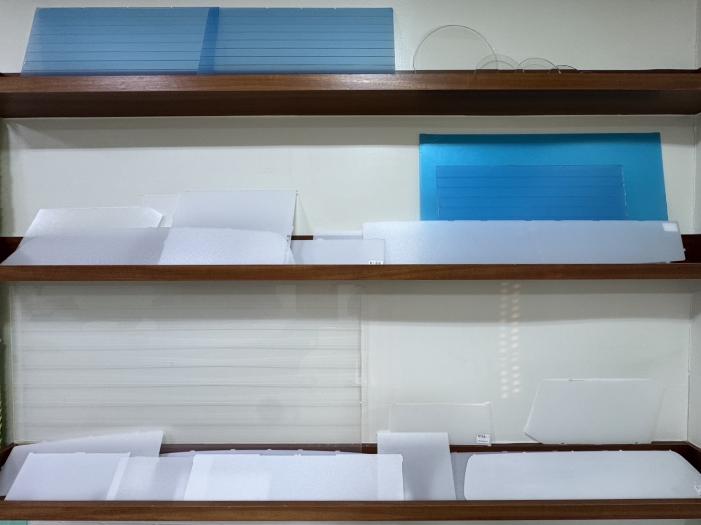
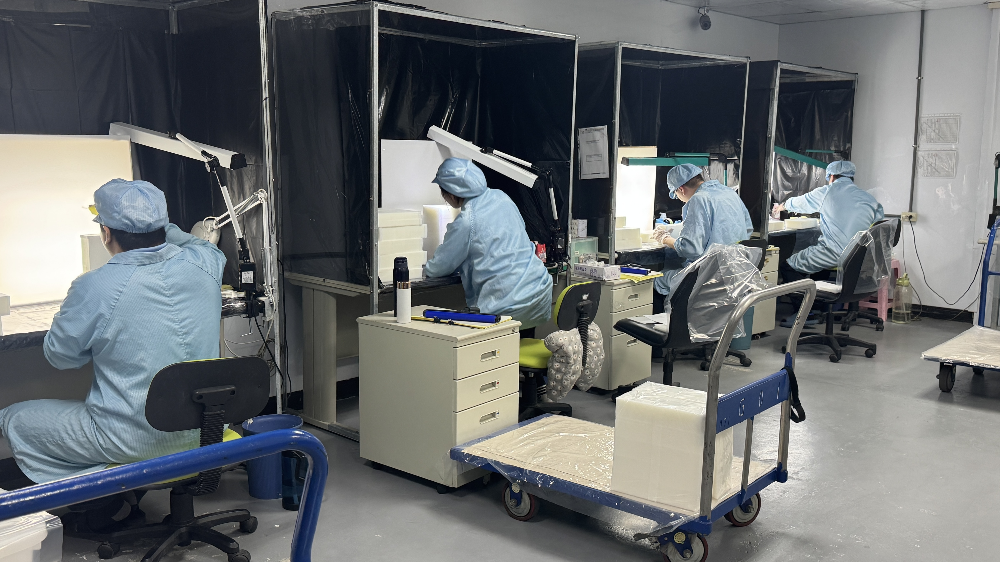
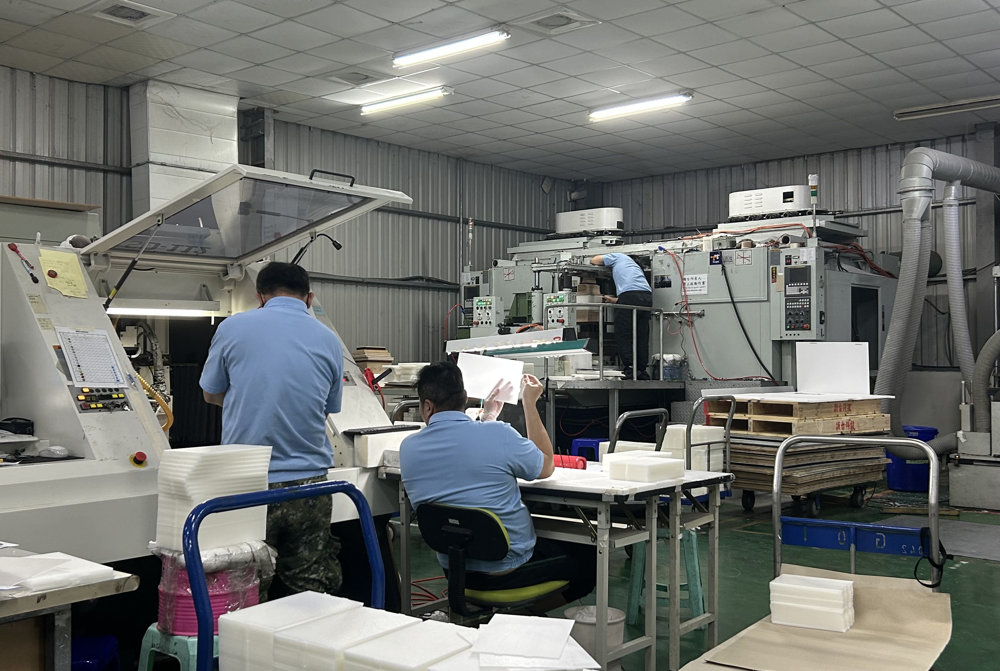
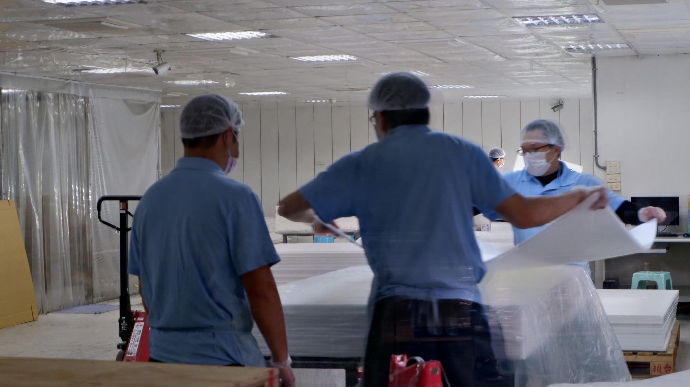
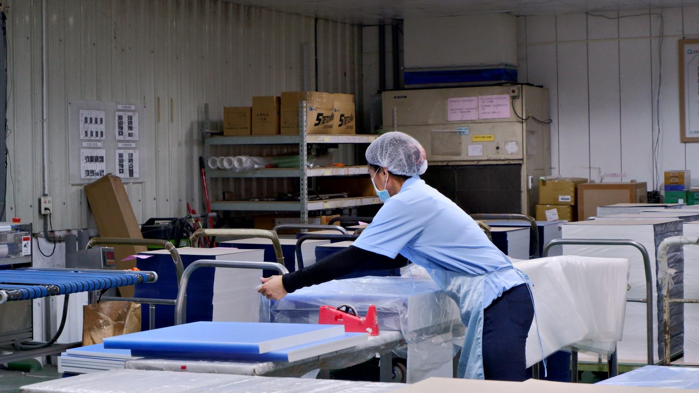
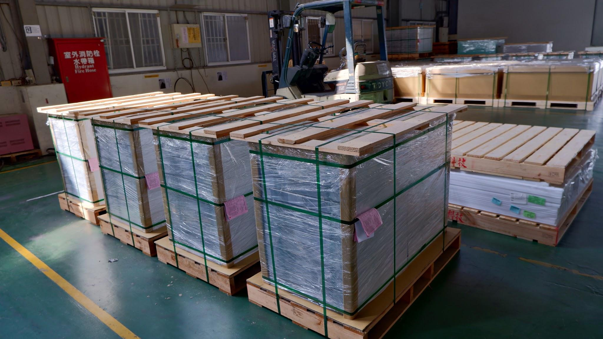
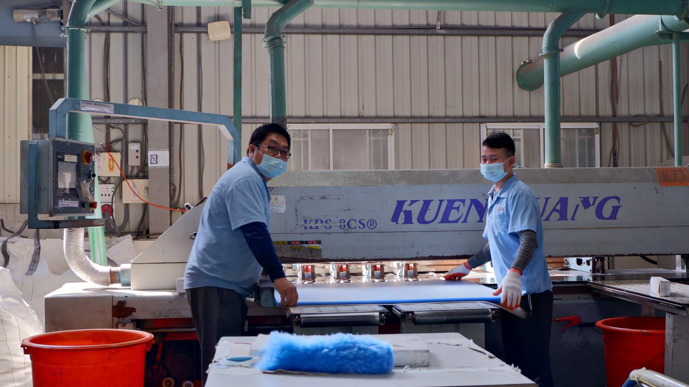
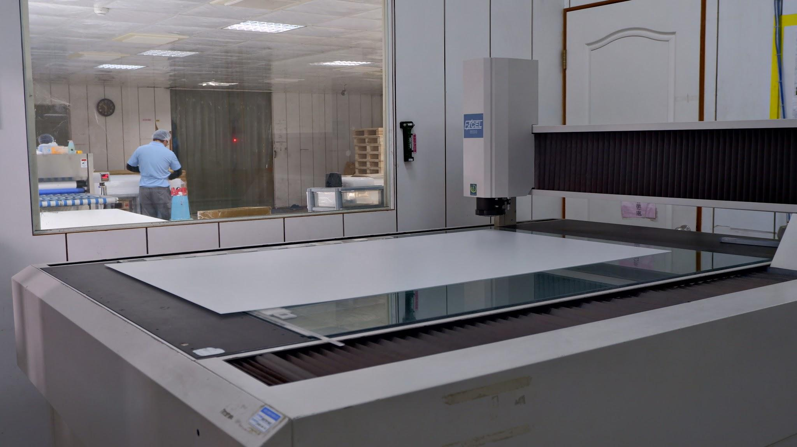
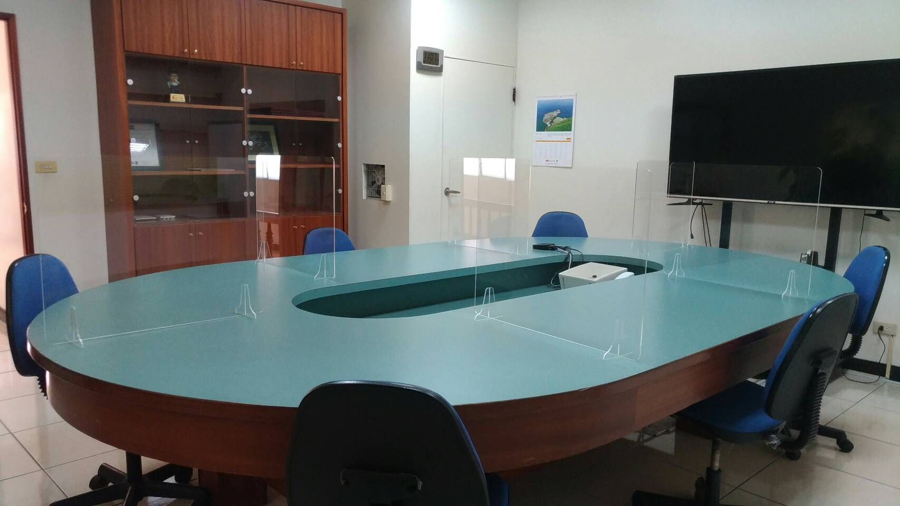

產品與生產能力
從材料研發到精密加工，提供全方位的光學級解決方案
多元加工材質
我們精通各種工業塑膠與光學材料的加工特性
光學級壓克力 (PMMA)
具備極佳的透光率與耐候性。主要應用於電視導光板、車燈透鏡、廣告招牌及各類光學展示組件。
聚碳酸酯 (PC)
以耐衝擊強度高著稱。適用於電子產品外殼、安全護目鏡、抗碎設備零件及戶外工程材料。
PVC 與 工程塑膠
提供耐酸鹼、耐腐蝕的化學工業用零件加工。包含 PP, PE, POM 等特殊工程塑膠材質。
高精度 CNC 加工規範
我們的工廠配備先進的 CNC 電腦數值控制加工機台，能夠處理大尺寸且精密的產品。我們的技術規範包括：
| 最大加工範圍： | 1200mm x 2400mm |
| 加工厚度範圍： | 1mm - 25mm |
| 最小加工精度： | ±0.05mm |
| 邊緣處理： | CNC 精修、雷射拋光、物理拋光 |

嚴格的品質管理
符合國際 ISO 標準，確保產品的出廠品質
機零壹科技深知穩定品質對客戶的重要性。我們在生產過程中的每一個環節都設有嚴格的檢核點：
1. 原料入庫檢驗 (IQC)
嚴格篩選合作供應商，確保所有板材的透光度、厚度公差均符合採購標準。
2. 首件確認與巡檢 (IPQC)
每一批次生產的首件產品必須經過精密量測。生產過程中定時巡檢加工參數。
3. 最終品質判定 (FQC/OQC)
產品出廠前進行 100% 外觀檢查與隨機尺寸量測，並使用防刮保護貼封裝。
生產現場藝廊
我們的現代化自動化生產設施







